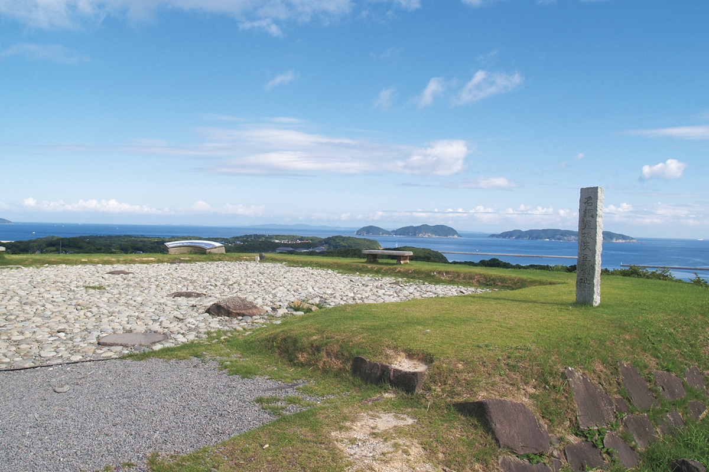
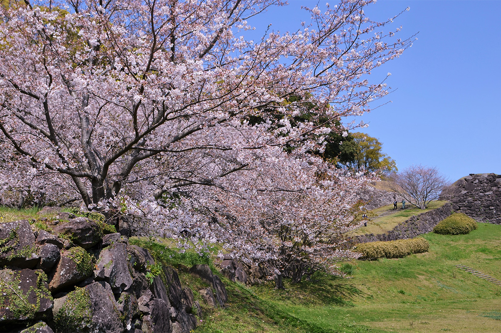
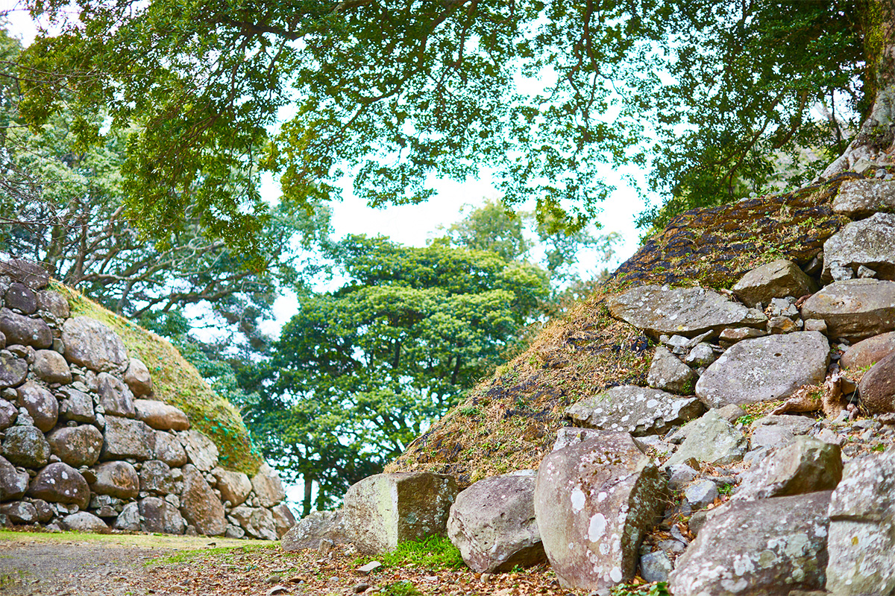
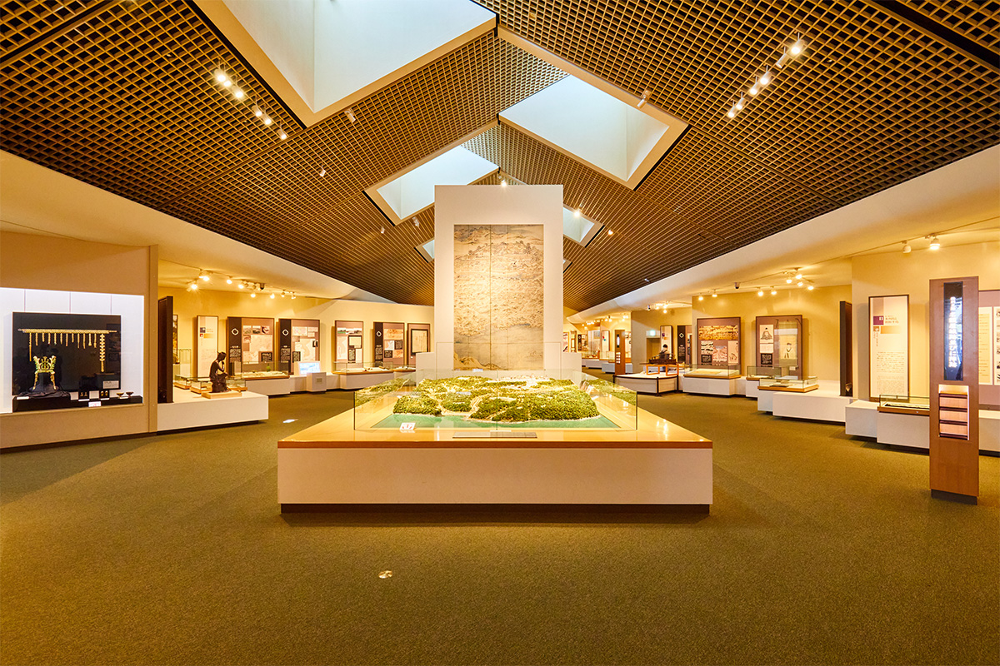
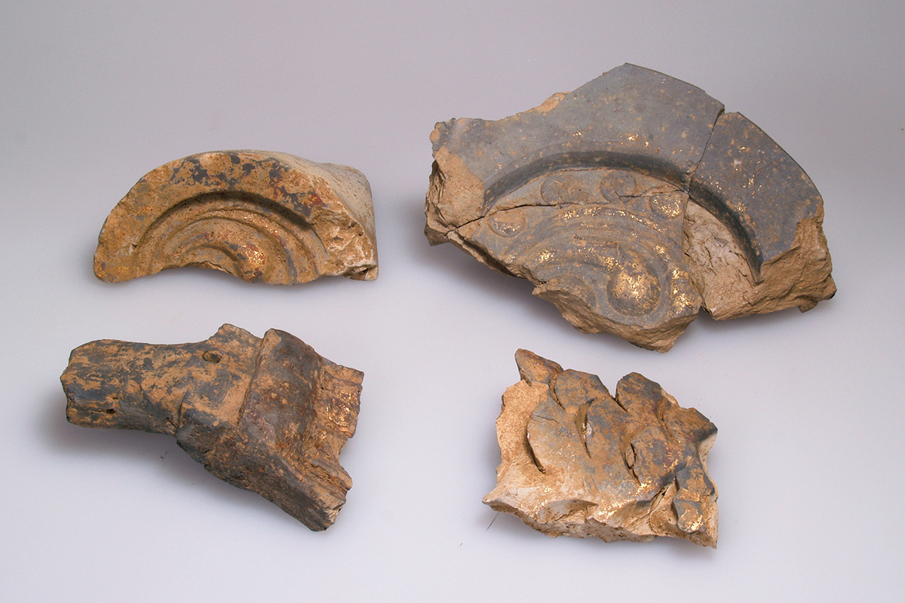
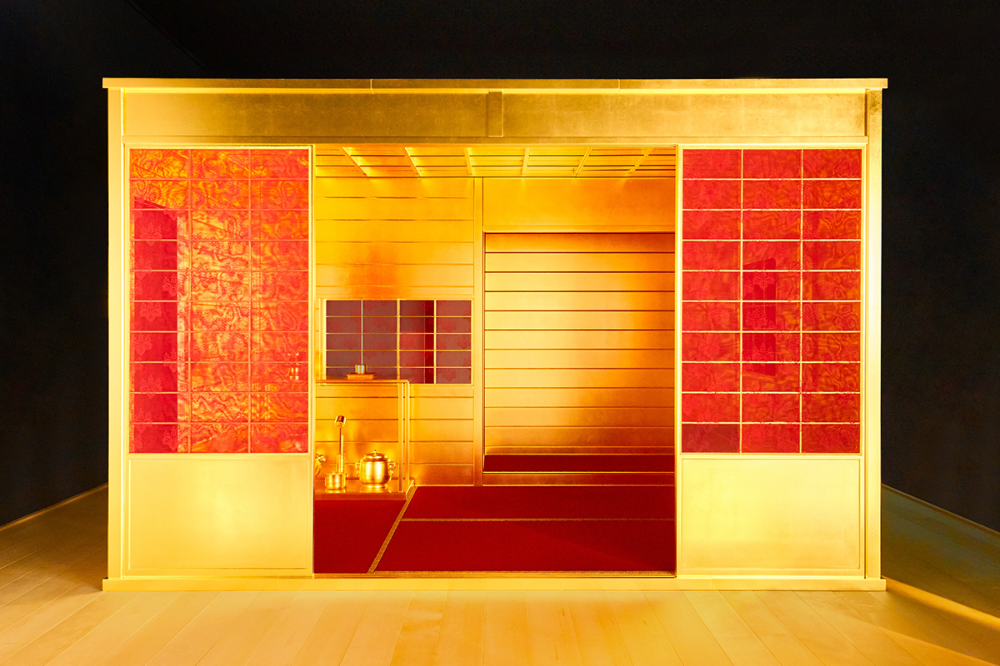
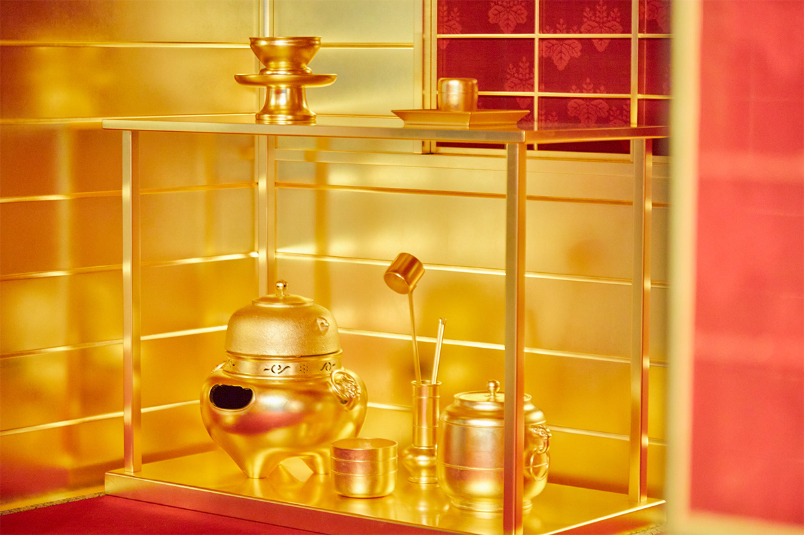
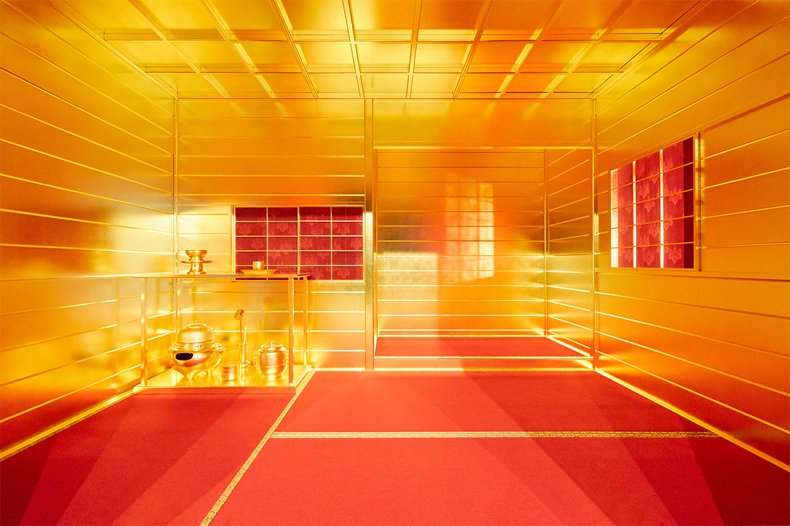
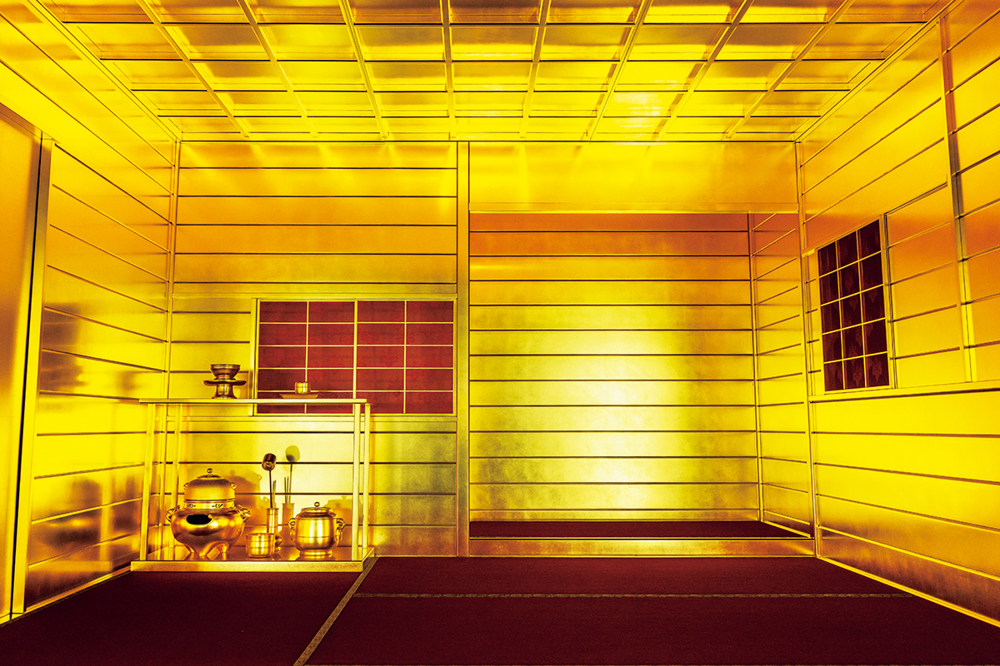

Префектура Сага · Карацу · история
Замок Нагоя (Хидзэн-Нагоя): последний замысел Хидэёси Тоётоми и его золотая чайная комната

На северном берегу префектуры Сага, в тихом рыбацком краю, лежат руины замка, который в конце XVI века уступал по размеру только Осакскому. Он прожил всего семь лет, и именно поэтому сохранился почти нетронутым.
История
Ставка для похода на континент
Объединив Японию, Хидэёси Тоётоми на этом не остановился. Его целью был Китай времён династии Мин, а путь туда лежал через Корейский полуостров. Когда корейский король отказался помогать в походе на Мин, в 1592 году началась война, которую в Японии называют походами годов Бунроку и Кэйтё. Через пролив, по разным оценкам, переправилось около 200 000 воинов.
Главной базой похода стал замок Нагоя в провинции Хидзэн (так раньше называлась территория нынешней префектуры Сага). Не путайте его со знаменитым замком в городе Нагоя: этот стоит на окраине Карацу, приморского города на севере префектуры. Строили его князья со всей страны, каждый свой участок, и управились за несколько месяцев. Площадь замка составила около 17 гектаров, больше было только у Осакского замка. Пятиярусная главная башня, по оценкам, поднималась на 25–30 метров над каменным основанием.
Вокруг замка разбили свои лагеря больше 150 князей, среди них Иэясу Токугава (1543–1616), будущий основатель сёгуната, правившего страной следующие два с половиной века. Всего здесь собралось больше 200 000 человек.

Расцвет длился всего семь лет, от начала войны до смерти Хидэёси в 1598 году. Поход свернули, и замок с княжескими лагерями оказался не нужен. В начале периода Эдо (XVII век) замок упразднили.

После этого край снова стал рыбацким. Большого строительства здесь так и не случилось, поэтому сохранились каменные стены, площадка главной башни и место главного дворца. Раскопки на территории замка идут по долгосрочному плану, и от них ждут новых находок.
Музей
Четыреста лет в одной капсуле
Рядом с руинами стоит Префектуральный музей замка Нагоя. Его тема: история связей Японских островов и Корейского полуострова. Вход бесплатный (по данным 2026 года), платные только специальные выставки.


«До замка здесь была глухая рыбацкая деревня. Но примерно за полгода вырос огромный замок, сюда съехались Хидэёси и князья со всей страны, и возник один из крупнейших городов мира. Сюда стеклось лучшее из культуры эпохи Момояма, чайная церемония, театр но, и отсюда это расходилось дальше. Так что эти места можно назвать точкой, откуда началось многое в японской культуре»
хранитель музея
«Когда замок стал не нужен, край вернулся к прежней жизни. Как раз поэтому руины и сохранились в том виде, какими были. Это капсула времени, которая хранит историю четырёхсотлетней давности. Если смотреть так на чайную комнату, на экспозицию и на сами руины, будет гораздо интереснее»
хранитель музея
Весной 2022 года, до 22 мая, в музее прошла выставка новых поступлений о Хидэёси, золоте и замке.
Чайная
Золотая комната Хидэёси

Золотую чайную комнату, по преданию, сделали по заказу Хидэёси. В отличие от обычных чайных домиков, она была разборной и ставилась внутри здания. В ней проводили чаепитие в императорском дворце в Киото и Большую чайную церемонию в Китано, Хидэёси принимал в ней князей в Осакском замке. С началом корейского похода комнату привезли в замок Нагоя, и, судя по документам, здесь ею пользовались четыре раза.
Реконструкцию впервые показали публике 27 марта 2022 года, в день большой чайной церемонии в замке. Основой послужил дневник Сотана Камия (1551–1635), богатого купца из Хакаты, который сам пил чай в этой комнате в замке Нагоя. Стены, столбы и потолок покрыты золотом целиком, и вся утварь золотая, кроме бамбукового венчика и льняной салфетки.


Делала реконструкцию мастерская «Хасэгава Бидзюцу Когэй», которая реставрирует национальные сокровища и важные памятники культуры. На неё ушло 16 500 листов сусального золота такого качества, какое используют при реставрации. На 2022 год это была четвёртая полная реконструкция золотой чайной комнаты в Японии.
Учтите, что в постоянной экспозиции комнату не держат: в 2026 году её показывают во время мастер-классов и мероприятий музея. Расписание лучше заранее посмотреть на сайте.

Маршрут
Где увидеть
- Руины замка Нагоя (Хидзэн-Нагоя). Каменные стены с разрушенными углами, площадка главной башни с видом на острова Ики и Цусима, место главного дворца. Весной здесь цветёт сакура.
- Префектуральный музей замка Нагоя. Утварь и доспехи времён Хидэёси, находки с раскопок, история связей Японии и Кореи. Вход бесплатный.
- Золотая чайная комната. Реконструкция в том же музее, в 2026 году её показывают на мастер-классах и мероприятиях.
Префектуральный музей замка Нагоя
- Адрес
- префектура Сага, Карацу, Тиндзэй-тё Нагоя, 1931-3
- Телефон
- +81 955-82-4905
- Часы работы
- 9:00–17:00
- Выходные
- понедельник (если это праздник, то следующий будний день), с 29 декабря по 3 января
- Цены / Вход
- бесплатно, специальные выставки платные
Фото: Косаку Китадзима.